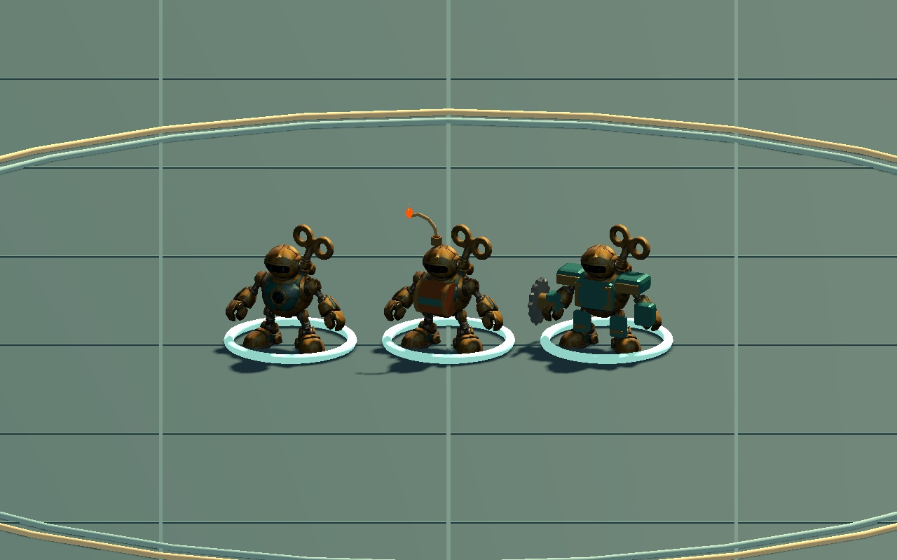
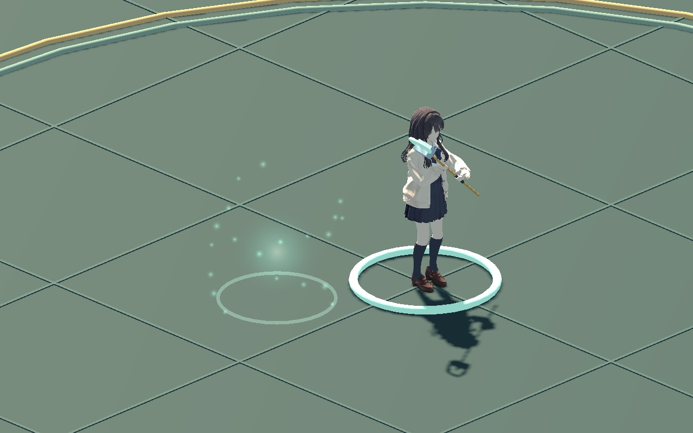

WITCH / AUTOMATON NODES 01
태엽인형, 두 가지 역할
자폭형은 구리색 폭약통과 타들어가는 심지로, 절삭형은 두꺼운 청록 장갑과 회전 칼날로 구분했습니다. 기본 인형을 바탕으로 부품을 더해 같은 기계장치 계열의 모습으로 연결합니다.
현재 시험판 연결조립 · 시전 중단 · 전투

왼쪽부터 기본형 · A 자폭형 · B 절삭형
동작 확인

게임에서 N으로 기본 → A → B를 선택하고 W로 소환합니다. 이미 소환된 인형은 자신의 노드와 외형을 유지합니다.
A · 자폭형
소환이 끝나면 심지에 불이 붙고, 수명과 적에게 접근하는 정도에 따라 짧아집니다. 기존 노드 판정으로 자폭하며 폭약통을 포함한 부품이 흩어집니다.
B · 절삭형
가슴·어깨·정강이 장갑을 더하고 손에 회전 칼날을 장착했습니다. 반복 공격 때 칼날 회전과 작은 불꽃이 보입니다. 성능은 현재 시험판의 B 노드 규칙을 따릅니다.
두 버전 모두 부품이 빛 속에서 조립됩니다. 시전 중 경직으로 끊기면 현재까지 생성된 부품만 그 자리에서 무너집니다. 기본 인형의 레벨별 외형 변화는 다음 작업으로 남겨 두었습니다.
검증 및 작업 파일
노드별 시전·취소, 정점 연결, 심지·칼날, 기존 인형/포탑 회귀와 노드 전투 규칙까지 4,081개 검사를 통과했습니다. 9개 동작 장면과 정면 비교 1장, 총 610장의 실제 게임 렌더를 사용합니다. 심지 전체 수명 장면만 게임 시간을 6배로 진행하며 화면에 따로 표시합니다.
A는 10,583삼각형·27개 분할 부품, B는 11,827삼각형·21개 분할 부품입니다. 기존 원본 파일은 보존했습니다. 새로운 장갑 표면은 기존 원본보다 단순한 재질의 첫 외형 후보입니다. 붕괴는 바닥 낙하 연출이며 부품끼리·벽과 충돌하는 물리 시뮬레이션은 아닙니다. 이 페이지는 무음이고 게임은 기존 기계음을 사용합니다.
검증과 파일 해시 · 작업 인계